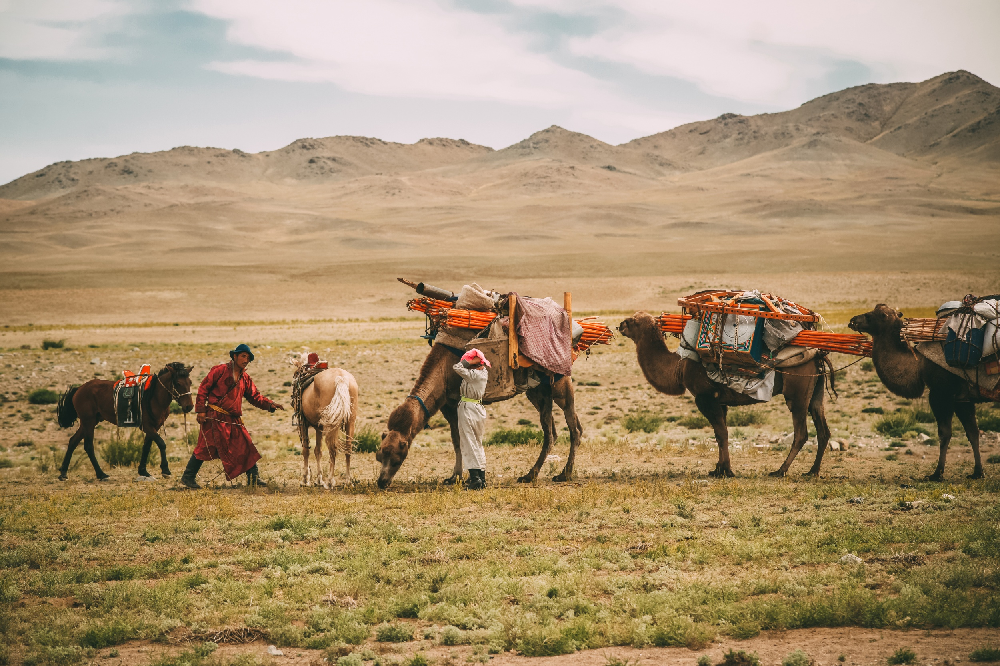
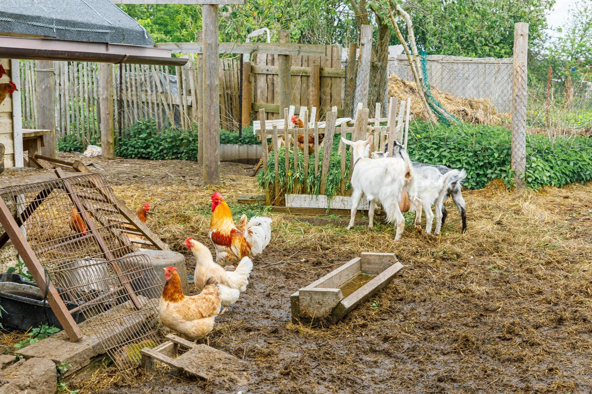

Origem e Evolução da Agricultura
A agricultura começou há milhares de anos, quando humanos passaram de caçadores-coletores para cultivadores de plantas e criadores de animais. Esse processo permitiu o desenvolvimento de civilizações e sociedades complexas.

Revoluções agrícolas (neolítica, verde, etc).
A Revolução Neolítica marcou o início da agricultura, enquanto a Revolução Verde, no século XX, introduziu novas tecnologias e práticas que aumentaram a produção de alimentos, como o uso de fertilizantes e sementes melhoradas.
Impacto da domesticação de plantas e animais.
A domesticação de plantas e animais possibilitou o controle sobre a produção de alimentos, levando a um estilo de vida mais sedentário e ao surgimento de aldeias e cidades.

Contribuição Econômica:
Papel da agricultura na economia global e local.
Papel da Agricultura na Economia Global e Local
A agricultura é um dos pilares da economia mundial, fornecendo alimentos, matérias-primas e empregos para milhões de pessoas. Em muitos países, especialmente em desenvolvimento, o setor agrícola é crucial para o PIB.
Emprego no setor agrícola.
O setor agrícola emprega uma grande parcela da população, desde trabalhadores de campo até profissionais em tecnologia e ciência agrícola.
Comércio internacional de produtos agrícolas.
O comércio de produtos agrícolas é essencial para a economia global, permitindo que países exportem suas especialidades e importem o que não conseguem produzir.
Segurança Alimentar:
Importância do agro para garantir o fornecimento de alimentos.
Fornecimento de Alimentos
A agricultura é a base da segurança alimentar, garantindo o abastecimento de alimentos para populações em todo o mundo.
Desafios relacionados à fome e desnutrição.
Apesar do avanço agrícola, a fome e a desnutrição ainda são problemas significativos. A distribuição desigual e a pobreza são barreiras para a segurança alimentar.
Políticas de segurança alimentar.
Governos e organizações internacionais implementam políticas para melhorar a segurança alimentar, como subsídios agrícolas e programas de ajuda alimentar.
Práticas como agricultura orgânica e agrofloresta promovem a sustentabilidade, preservando os recursos naturais e a biodiversidade.
Impacto ambiental da agricultura.
A agricultura pode ter impactos negativos, como desmatamento, uso excessivo de água e emissão de gases de efeito estufa. No entanto, práticas sustentáveis podem mitigar esses efeitos.
Conservação da biodiversidade.
A conservação de espécies agrícolas nativas e a diversidade genética são essenciais para a resiliência dos sistemas agrícolas.
Tecnologia e Inovação:
Agricultura de precisão e tecnologias digitais.
Tecnologias como drones, sensores e big data permitem uma gestão mais precisa das culturas, otimizando o uso de recursos e aumentando a produtividade.
Biotecnologia e engenharia genética.
A biotecnologia permite o desenvolvimento de plantas e animais geneticamente modificados, com características como resistência a pragas e maior valor nutritivo.
Máquinas agrícolas e automação.
A mecanização e automação das operações agrícolas aumentam a eficiência e reduzem a necessidade de trabalho manual.
Desafios Globais:
Mudanças climáticas e seus impactos na agricultura.
As mudanças climáticas afetam a produtividade agrícola, alterando padrões climáticos e aumentando a frequência de eventos extremos, como secas e inundações.
Crescimento populacional e demanda por alimentos.
Com o aumento da população mundial, a demanda por alimentos cresce, desafiando os sistemas agrícolas a produzir mais de maneira sustentável.
Degradação do solo e gestão de recursos hídricos.
A degradação do solo e a escassez de água são problemas críticos que afetam a capacidade de produção agrícola.
Cultura e Sociedade:
Papel da agricultura na formação de culturas e sociedades.
A agricultura tem sido central para o desenvolvimento de culturas e sociedades, influenciando desde a culinária até festivais e tradições.
Tradições agrícolas e culturais ao redor do mundo.
Cada região tem suas tradições agrícolas, que refletem o clima, a história e as preferências culturais locais.
Agricultura familiar e comunidades rurais.
A agricultura familiar é uma forma vital de sustento em muitas regiões, contribuindo para a economia local e a coesão social.
Políticas Públicas e Economia Agrícola:
Políticas de subsídios e regulamentações.
Os governos frequentemente implementam políticas para apoiar os agricultores, como subsídios para insumos agrícolas e regulamentações para garantir a segurança alimentar.
Acordos comerciais e organizações internacionais.
Acordos comerciais internacionais facilitam o comércio de produtos agrícolas, enquanto organizações como a FAO promovem práticas agrícolas sustentáveis.
Preços de commodities agrícolas.
Os preços das commodities agrícolas são influenciados por uma variedade de fatores, incluindo clima, políticas governamentais e demanda global.
Educação e Capacitação:
Preços de commodities agrícolas.
Formação e Capacitação de Agricultores
Programas de educação e capacitação ajudam os agricultores a adotarem práticas mais eficientes e sustentáveis, melhorando sua produtividade e rendimentos.
Programas de extensão agrícola.
Esses programas oferecem suporte técnico e treinamento para agricultores, ajudando-os a implementar novas tecnologias e práticas.
Iniciativas de conscientização pública sobre agricultura.
Campanhas e programas educativos podem aumentar a conscientização pública sobre a importância da agricultura e a necessidade de práticas sustentáveis.
Futuro da Agricultura:
Perspectivas futuras e tendências do setor.
O futuro da agricultura inclui tendências como a agricultura vertical, fazendas urbanas e o uso crescente de inteligência artificial.
Novas tecnologias e práticas emergentes.
Inovações como alimentos sintéticos e agricultura celular estão emergindo como novas fronteiras na produção de alimentos.
Desafios e oportunidades para a próxima geração de agricultores.
Os futuros agricultores enfrentarão desafios como mudanças climáticas e escassez de recursos, mas também terão oportunidades com novas tecnologias e mercados emergentes.